← All tutorials
Moving things around
Anything with six dots beside it can be picked up. A line or a highlight shows where it will land, and it lands exactly there.
In a note
Move a line or block
Drag the six dots
→
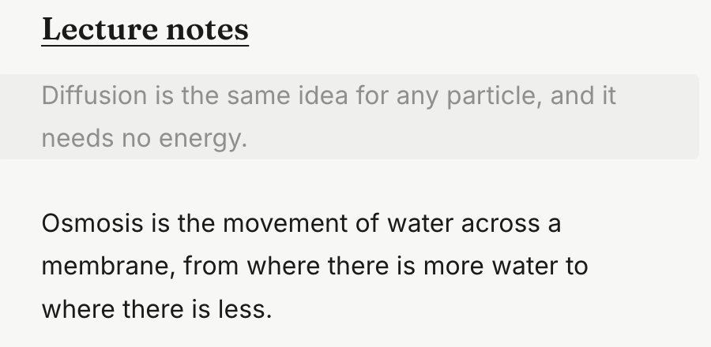
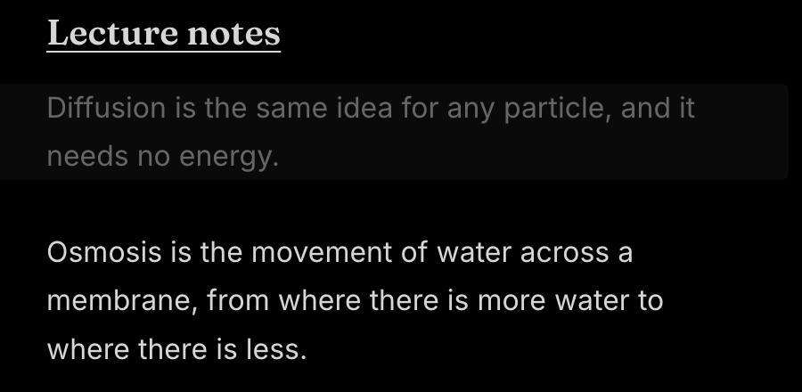
Point at a line and its six dots show on the left. Drag them and a greyed copy opens up where it will land. Pictures, voice notes, tables and formulas move the same way.
Several at once
Ctrl/Cmd + click the six dots
→
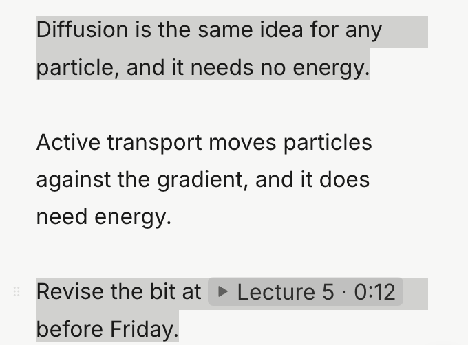
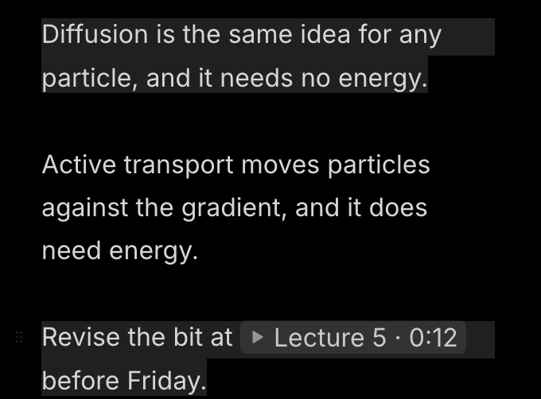
Each one you click joins the pick (Shift + click picks a run). Then drag, copy, cut or delete them together.
Into another note
Drop the six dots on a note in the sidebar
→
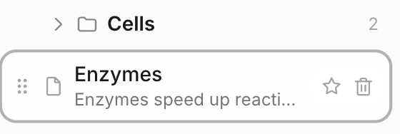
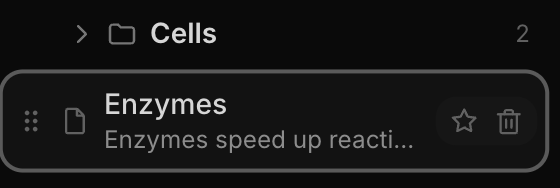
The block goes to the end of that note, and Undo brings it back.
A link instead of a move
Alt + drag a note into a note
→
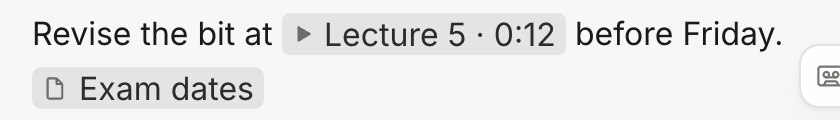
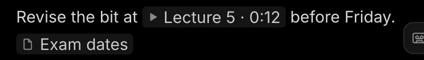
Hold Alt (Option on a Mac) as you drag a note from the sidebar into a note, and a link to it goes in on its own line.
In the sidebar
Into a folder
Hold a note over a closed folder
→
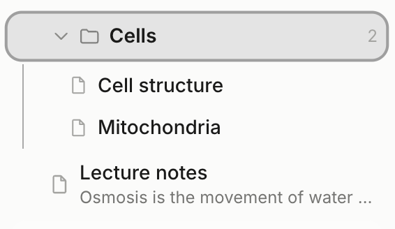
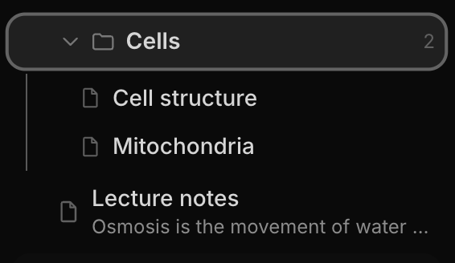
It opens, so you can drop the note deeper inside.
Change your mind
Moving notes into another folder says where they went. Undo puts them back where they were.
Pin it
Drop a note on Pinned
→
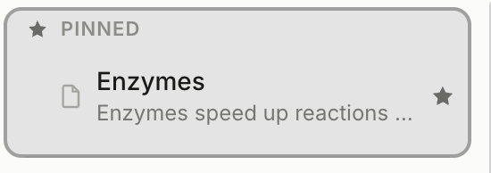
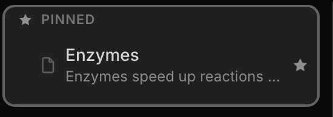
Once something is pinned, drop a note anywhere on the Pinned list to pin it. Drag it back into your notes to unpin it.
From Finder or Explorer:
- Drop files on a folder in the sidebar to copy them in — a Markdown file becomes a note.
- Drop a picture, recording or file into a note and it goes on a new line under the block you let go on.
- Hold a file over a tab and that note comes to the front.